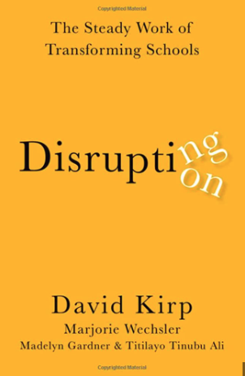

“In een democratisch samenleving moet het onderwijs vrij en universeel zijn, niet-sectarisch, democratisch in methode en afhankelijk zijn van goed getrainde professionele leraren” (Horace Mann).
Tegen het vernieuwen van onderwijs is in het onderwijs lang positief aangekeken. Dat was in de tijd dat het maatschappelijk perspectief optimistischer was. Het was ook de tijd dat vernieuwingen vooral uit het onderwijs zelf kwamen. Het maatschappelijk optimisme verdween en de vernieuwingsdrift van het onderwijs werd op een gegeven moment door politiek en anderen buiten het onderwijs overgenomen. Zij wilden het onderwijs naar eigen hand zetten. Dat was zeker het geval in Amerika. Sinds de jaren tachtig was het geduld in de politiek en bij mensen die met succes hun eigen bedrijf en start-ups hadden opgezet opraakt. In hun ogen paste het onderwijs niet meer bij de tijd. Zij kozen voor snelle en makkelijke oplossingen en zetten de mensen in het onderwijs onder druk. Zo kon het gebeuren dat scholen gesloten werden als er niet in een bepaalde tijd bepaalde testscores werden gehaald. Voor het onderwijs werden van buitenaf doelen gesteld, er werd verteld dat de leraren harder moesten werken om de doelen te halen en als een school er niet in zou slagen om het beoogde resultaat te behalen, zou het zelf de consequenties moeten dragen. Ondertussen heeft vernieuwen bij mensen die in het onderwijs zelf werken een vieze bijsmaak gekregen. Of het nou over het aanpassen van de leerstof gaat, over technologische veranderingen of over systeemveranderingen, veel vertrouwen heeft men in het onderwijs niet meer in de plannen en ambities. Daar zijn ze ondertussen wat vernieuwing betreft vooral cynisch, argwanend en boos geworden en willen ze er niet veel meer van weten. ‘Laat ons met rust en laat ons onze eigen gang gaan’, hoor je ze roepen. Het onderwijs zelf kwam in het defensief en geïsoleerd te staan. Toch is het zo dat het onderwijs zelf her en der nog steeds succesvol vernieuwt. Wat hebben die succesvolle vernieuwingen gemeenschappelijk en waar zijn ze op zijn gebaseerd? In Disrupting Disruption. The Steady Work of Transforming Schools laten Kirk e.a. zien dat het bij succesvolle vernieuwingen in het onderwijs nooit om snelle veranderingen en makkelijke oplossingen gaat. Daar gaat het niet om afrekenen op resultaat, terug naar de basis, de markt of vrije keuze voor ouders. Bij succesvolle vernieuwingen in het onderwijs gaat het iedere keer weer om verbeteringen die rustig en stapsgewijs doorgezet en organisatorisch sterk en stabiel onderbouwd zijn. Daar werkt men met elkaar onderzoekend, innoverend en lerend toe naar de toekomst en heeft men de ontwikkeling van alle kinderen voor ogen. Het boek beschrijft drie voorbeelden van succesvolle onderwijsvernieuwingen.
Een generatie geleden was Union (Oklahoma) nog een welgestelde witte gemeenschap. De welgestelden vertrokken naar de buitenwijken en een armer en etnisch divers deel kwam ervoor in de plaats, met veel jonge immigranten. De studentenbevolking van Union veranderde daardoor ook sterk. Een derde is nu blank, een derde komt uit Zuid-Amerika en de rest is gemengd. Een vijfde moet de Engelse taal nog leren en 70% komt voor het vrije lunch-programma in aanmerking. Er moest wel een nieuwe school worden opgebouwd. De hoge slagingspercentages vallen op die laatste vijftien jaar van 74% naar 91% zijn gestegen. Dat is vooral knap omdat Oklahoma relatief weinig geld kan besteden per student. In Union heeft het men het gevoel er voor alle kinderen te zijn. De beta-vakken hebben aandacht in het hele curriculum, van kleuterschool tot en met voortgezet onderwijs. Er wordt een breed pakket van diensten aangeboden en onderwijs en gemeenschap zijn er nu verbonden, bijvoorbeeld door naschoolse activiteiten en gezondheidszorg. Iedereen doet mee in de kunsten en sport. De leerlingen worden er op een volwassen manier begeleid in de overgang van voortgezet naar hoger onderwijs. Sterk leiderschap zorgde er mede voor dat Union een sterk schooldistrict is geworden. Union City (New Jersey) is de dichtstbevolkte stad van Amerika. Het gemiddelde gezinsinkomen is er de helft van dat in NJ, de werkloosheid is er twee keer zo hoog. Union City is al veertig jaar een Latino-enclave en 99 procent van de studenten is er Latino. Een groot deel spreekt geen Engels en is nog maar kort in Amerika. Het aantal ongedocumenteerden is er hoog. Toch verlaat 85% het voortgezet onderwijs met een diploma en stroomt 72% door naar het college. Veel werk wordt gestopt in de vroege ontwikkeling van kinderen waar met effectieve educatieve programma’s wordt gewerkt. Werken met taal heeft er veel aandacht. Ze leren eerst in het Spaans en van daaruit wordt succesvol de transfer naar het Engels gemaakt. Het leiderschap komt uit het onderwijs zelf en kent een grote continuïteit. Data-informatie gebruiken ze veel; niet om onderwijzers te straffen maar om ervoor te zorgen dat ze het beter doen. Union City kent een sterke ondersteunende gemeenschap en de leerlingen voelen dat ze ertoe doen. Roanoke City schooldistrict (Virgina), de derde succesvolle onderwijsvernieuwing in het oosten van het land, heeft zo’n 14.000 studenten. Het heeft een diverse, maar ook een relatief arme studentenpopulatie met veel vluchtelingkinderen. Tien jaar geleden stond het schoolsysteem er slecht voor en vele kinderen vielen voortijdig uit. Het succes van alle kinderen werd topprioriteit en vandaag de dag haalt 90% een diploma. Studenten worden goed voorbereid op carrière en schoolloopbaan en onderwijsgelijkheid wordt er nagestreefd. Ook hier wordt veel op voorschoolse educatie geïnvesteerd en in de zomer kunnen kinderen educatieve programma’s volgen. Studenten krijgen veel educatieve mogelijkheden aangeboden. Nieuwkomers worden niet in aparte klasse gezet maar voelen vanaf dag één dat ze erbij horen. En ook hier zijn er sterke verbindingen met lokale organisaties en diensten in de gemeenschap.
De drie initiatieven die uitgebreid worden beschreven hebben meer met elkaar gemeen dan dat ze van elkaar verschillen. De scholen staan in gemeenschappen die te maken hebben met omstandigheden waar scholen tegenwoordig mee te maken kunnen hebben zoals armoede, taalproblemen, culturele verschillen en discriminatie. Bij het succesvol vernieuwen in Union (OK), Union City (NJ) en Roanoke (VA) gaat het niet om enkele helden en ego’s, maar om hard en constant met elkaar werken. De onderwijsmensen blijven doen wat werkt en stoppen met wat niet werkt. Het zijn instellingen waar de medewerkers zelf ook willen leren. Hun prioriteiten en principes hebben ze afgestemd op de omstandigheden waarin ze werken. Ze creëren ondersteunende leeromgevingen, betrekken de leerlingen bij het onderwijs, werken met getalenteerde docenten, zorgen ervoor dat de leerplannen uitdagend zijn, er wordt met ouders en lokale organisaties samengewerkt en (alle) leerlingen krijgen wat zij daar nodig hebben. Het laat zien hoe onderwijs zelf onderwijsvernieuwing kan doorvoeren en het onderlinge vertrouwen terug kan winnen onder leiding van stabiel leiderschap. Het gaat hier om de smeltkroes van de klas, de interacties tussen leraren, de vaardigheden van de teamleider die snapt hoe verschillende onderdelen in elkaar grijpen, de omringende gemeenschap die erbij betrokken is en de politiek die de initiatieven steunt. Een lange termijnvisie van bovenaf en dagelijks van onderop werken aan van hier naar daar. Union, Union City en Roanoke hebben succesvolle onderwijsvernieuwing doorgevoerd en een positief antwoord gevonden op fragmentering, isolatie en prestatiedruk. Volhardende inspanning heeft meer te bieden dan ontwrichtende verstoring, waar ze in Amerika veel meer mee te maken hebben dan bij ons. Maar toch zijn dit ook goede lessen voor ons. Saai en taai misschien, allicht, maar oh zo krachtig, daar en hier.

Kirp,D., Wechsler, M., Gardner, M. & Ali, T.T. (2022). Disrupting Disruption. The Steady Work of Transforming Schools. New York, Oxford University Press.